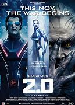

2.0 is a 2018 Indian Tamil-language science fiction action film written and directed by S. Shankar, and co-written by B. Jeyamohan. Produced by Subaskaran under the banner of Lyca Productions. As the second instalment in the Enthiran franchise, 2.0 is a standalone sequel to Enthiran featuring Rajinikanth reprising the roles of Vaseegaran and Chitti, alongside Akshay Kumar and Amy Jackson. Sudhanshu Pandey, Adil Hussain, Kalabhavan Shajohn, and K. Ganesh appear in supporting roles. The film follows the conflict between Chitti, the once dismantled humanoid robot, and Pakshi Rajan, a former ornithologist who seeks vengeance upon cell phone users to prevent avian population decline.
| TITLE | ACTORS | AGE RESTRICTION | SHOWING TIMES |
|---|---|---|---|
|  | 2.0 |
|
PG |